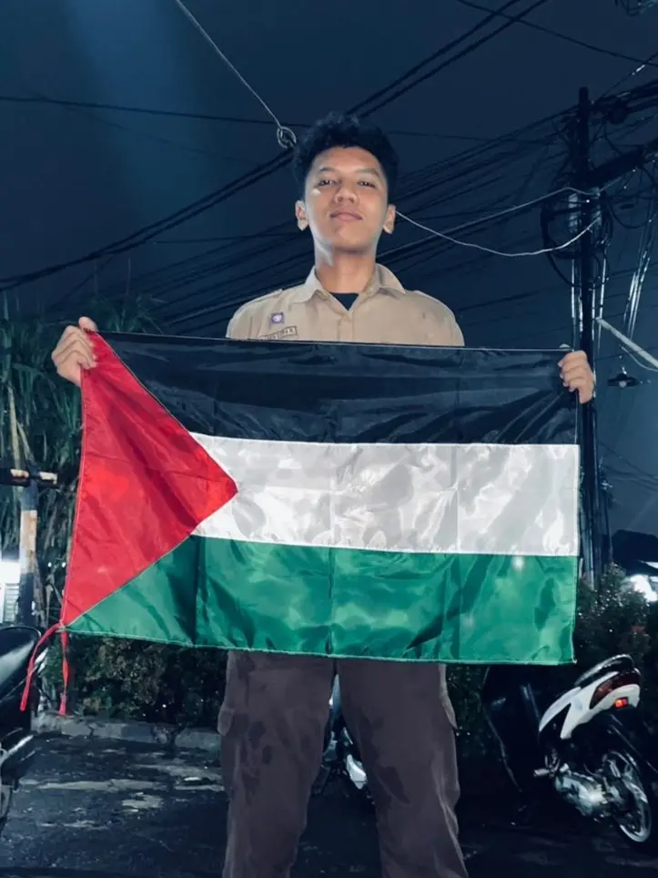
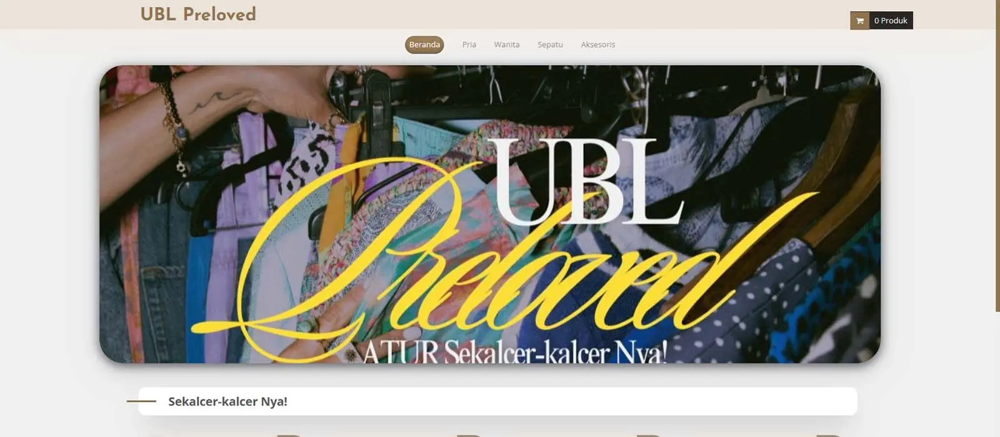
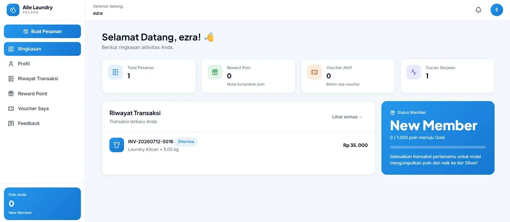
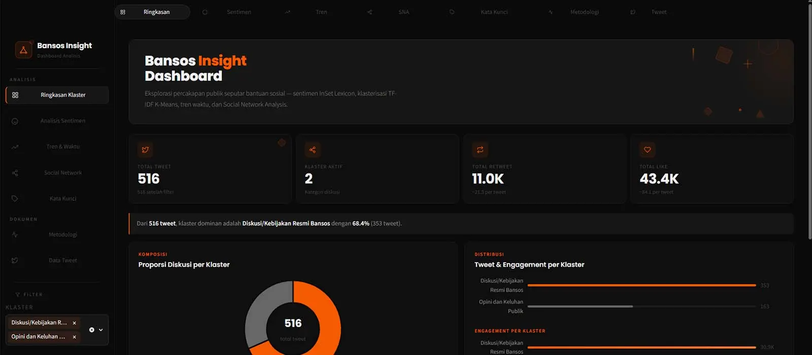
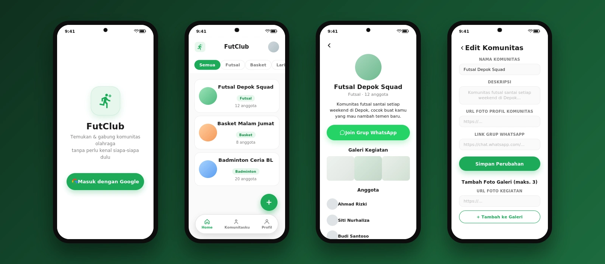
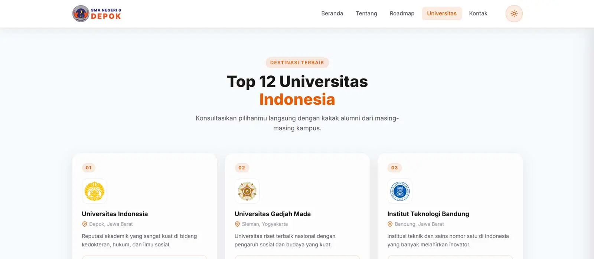
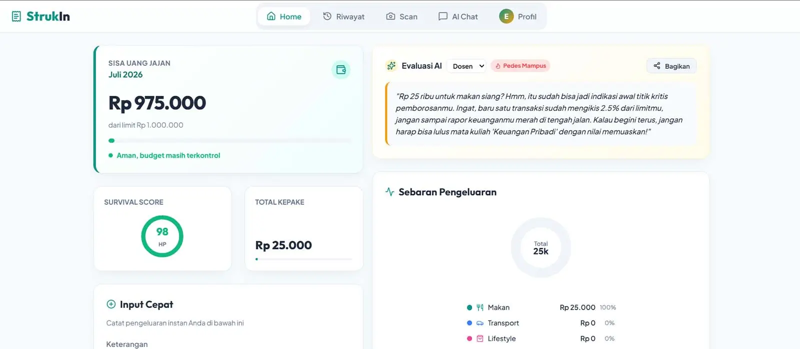
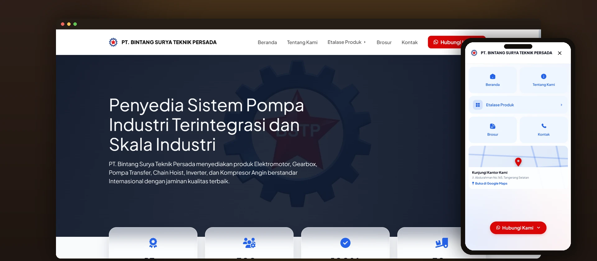

Berfokus pada pembelajaran dan pendewasaan diri. Portofolio ini menampilkan proyek dan kontribusi saya sebagai anak perkuliahan di dunia teknologi.


Mempermudah Mahasiswa Universitas Budi Luhur dalam mencari dan menawar barang bekas secara efisien dan aman. dan pasti nya memberikan peluang untuk Mahasiswa yang mau menjual barang bekas mereka.

Sistem manajemen laundry berbasis web dengan panel admin dan panel pelanggan yang terpisah. Mendukung pemesanan layanan, pelacakan status cucian, serta integrasi pembayaran online melalui Midtrans untuk mempermudah transaksi antara pelanggan dan pihak laundry.

Proyek tugas akhir (UAS) yang menganalisis diskursus masyarakat Indonesia terkait program bantuan sosial (bansos) di platform X/Twitter. Mencakup clustering K-Means, analisis sentimen dengan InSet Lexicon, social network analysis, hingga dashboard interaktif berbasis Streamlit untuk memvisualisasikan hasil analisis.

Aplikasi Android untuk komunitas semua olahraga, dibangun dengan Android Studio dan backend PHP REST API terhubung ke MySQL. Dilengkapi antarmuka bergaya glassmorphism, alur login dengan Google, serta integrasi Firebase untuk mendukung fitur-fitur real-time di dalam aplikasi.

Landing page untuk program Campus Goes to School, menampilkan informasi kegiatan, jadwal, dan detail program kunjungan kampus ke sekolah-sekolah. Dibangun dengan HTML, CSS, dan JavaScript agar ringan dan mudah diakses.

Dhika dan saya membuat aplikasi berbasis AI yang menggabungkan backend Python dengan antarmuka frontend berbasis JSX (React), terintegrasi dengan API untuk mendukung pemrosesan data secara otomatis. Deskripsi ini masih perlu disesuaikan lebih lanjut sesuai detail sebenarnya dari proyek kami berdua.

Website company profile & katalog produk untuk PT. Bintang Surya Teknik Persada, distributor mechanical-electrical resmi untuk elektromotor, gearbox, pompa industri, inverter, dan kompresor angin. Dibangun sebagai proyek klien dengan Astro dan pendekatan hybrid CSS + Tailwind, mencakup etalase produk dengan filter kategori, halaman profil perusahaan, integrasi company profile PDF, serta akses kontak langsung ke tim sales lewat WhatsApp.